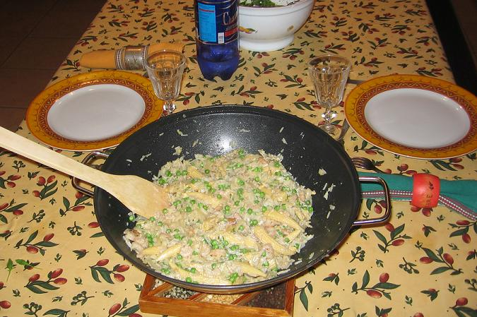

Recette n°108 :
Fried rice de Madame Jieming de
Melbourne
Ingrédients :
- 350 à 400 g de riz
- 2 oeufs
- 400 g de crevettes décortiquées
- un gros oignon débité en lamelles fines
- 4 cuillers à soupe de suce de soja
- un verre de vin blanc ou de sherry
- 200 g de petits pois frais ou surgelés
- 200 g de petits épis de maïs cuits
- 4 cuillers à soupe d'huile d'olive
- sel et poivre selon goût

Préparation :
- faire cuire le riz si possible au cuit-riz, sinon à la
casserole dans beaucoup d'eau salée puis égoutter et
réserver
- dans le wok, mettre 2 cuillers d'huile et faire frire l'oignon
à feu doux sans le brûler
- ajouter les crevettes et les faires cuire à feu doux en ruant
trois à quatre minutes
- ajouter le vin et la sauce de soja, laisser cuire une minute puis
réserver le tout hors du wok
- remettre le reste d'huile dans le wok, faire chauffer, y casser les
oeufs et les brouiller à la spatule
- remettre le riz avec les crevettes dans le wok, ajouter les petits
pois et le maïs, remuer en laissant chauffer encore une minute
- remettre de la sauce de soja si nécessaire au goût,
saler et poivrer selon goût
- servir aussitôt avec une salade verte.
Observations :
1 - recette exécutée le 19 novembre 2006 à
Rennes pour Mamy et moi d'après les sympathiques conseils de
Madame Jieming de Melbourne
2 - Absolument délicieux avec une petite salde de roquette
à l'huile d'olive